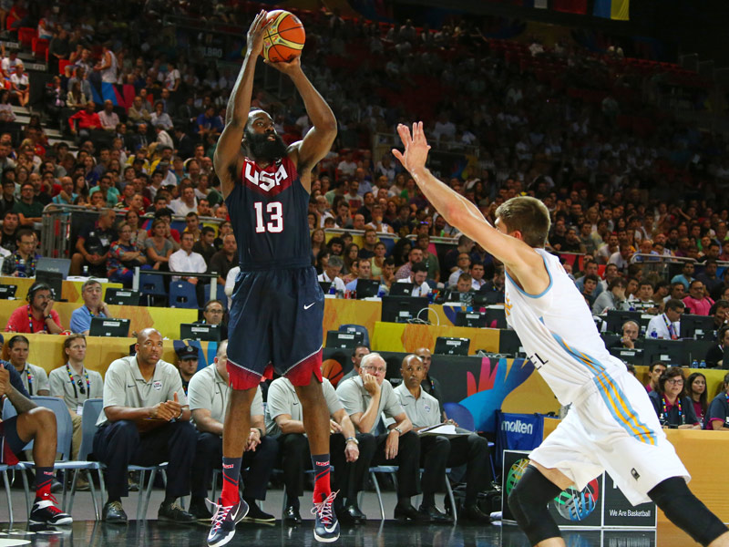

Are you interested in basketball, but wonder what type of a player you are? Do you wonder whether you prefer to defend more or attack more? Answer a few short questions to find out your basketball style!
Get Started To Find Out Your Basketball RoleThe following code has been developed by students and/or researchers of the Freshman Research Initiative DIY Diagnostics Stream at The University of Texas at Austin. This code is shared for demonstration purposes and should not be considered a product -- it is for entertainment purposes only. Any user of this code does so at their own risk. Members of the DIY Stream, FRI, and The University of Texas system are not liable for anything related to this code.
THIS CODE SHOULD NOT BE USED TO DETERMINE ANY KIND OF PROFESSIONAL BASKETBALL POSITION.
